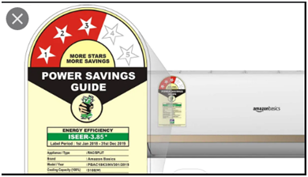

Instructions
* * *
-Press right/left to switch slides
-Press f6 twice to navigate
-Hover mouse to top and click the logo to head back to main page
-To move down click anywhere and press down key
Enjoy!
Meet Lepukh
He wants to go for shopping today.
But he does not know about Consumer Awareness and might get manupulated by clever shopkeepers out there.Let us help Leipukh to safely buy him and his sister some goods.

Adulteration
Introduction
Even if once you must have had to pick some papaya seeds from the black pepper you brought or have found your milkman adding a significant proportion of water in the milk he delivers at your door. This dishonest adding of another substance in a product to maximize profit, by hampering the quality of the product is what we call adulteration.
...
* * *
The consequences of this hampering of the quality of products ranges from mere loss of money to serious health hazards. However, there are many ways by which we can check for adulteration in the products we consume with the help of our senses and some simple experiments! So, Let us learn a few such methods to help us identify adulteration in things we commonly use (Here we will only discuss about food items): Make it simple, but significant.
Let's check out some common adulteration techniques.
Continue pressing rigth cursor key otherwise.
Milk
a. Adulterant: water
Testing method:
• Put a drop of milk on a slanting surface.
Observations : -->Milk
b. Adulterant: Detergent in milk
Testing Method:• Take 5 to 10ml of sample with an equal amount of water. • Shake the contents thoroughly
Observations : -->Turmeric(Haldi)
a. Adulterant: Lead Chromate
Testing Method:• Add small quantity of turmeric in a transparent glass of water.
Observations : -->Turmeric(Haldi)
b. Adulterant: Metanil yellow and chalk powder
Testing:• Take some turmeric powder in a transparent glass • Add a few drops of water and concentrated hydrochloric acid to it. • Next, shake it vigorously.
Observations : -->Edible Oils
Adulterant: TOCP
Testing Method:• Take 2ml of sample of oil. • Add on a little amount of yellow butter (Solid).
Observations : -->
Fruits and Vegetables:
Testing Method: • Take a cotton piece soaked in water or vegetable oil. (Conduct the test separately).
• Rub the outer green surface of a small part of green vegetable/chili.
Illegal charging of additional taxes
Illegal charging of taxes by Restaurants
Being the consumers of services like restaurants you are required to pay taxes (such as GST) levied on those services or good when we consume them. But many a times restaurant owners intentionally misguide you and make you pay more taxes than what you are supposed to. So let’s find out how you can save yourself from such fraud.
UNDERSTANDING YOUR RESTRAUNT BILL
Being end consumers we hardly pay attention to our restaurant bill and many of us are not even aware of the components included in it. So, let us have a quick look at all the components of a restaurant bill. • VAT: This is the tax charged on the food portion of your bill. • Service tax: This is the tax charged on the services provided by the restaurant. • Service Charge: This is a charge applied by the restaurants and not by the government. • GST: This is the tax applied on your services you consume
Want to register complaints against such GST frauds? You should contact CBIC (Central Board of Indirect Taxes and Customs).You can do so by: Visiting CBIC through: https://cbic-gst.gov.in/# and going to the CBIC Mitra Helpdex. Toll free number: 1800-103-4786 Official Email address: chmn-cbic@gov.in
Check If Your Dealer Is Registered To GST:
The first thing you should check for in the bill to find if your dealer is registered with GST is the GST number. It is a 15 digit number. It is usually present at the top or bottom of the bill. If there is no such number in the restaurant bill, it means that your dealer is not registered with GST and you are being frauded.
* * *
Service charge is optional
You may deny the Restaurant to pay the service charge. If the restaurant forces it on you, you can complain the same to the consumer court.
2. How to check for fake GST number?
As you already may have this question by now it’s important that you know how to check for fake GST no.: You can visit this link of government website to check the authenticity of the GST number in your bill.
* * *
How much GST you are being charged.
Sometimes the restaurant may overcharge you GST. In order to prevent such fraud you should check for the GST tax levied on every goods or services you consume. You can visit https://cleartax.in/s/impact-gst-food-services-restaurant-business to get the updated tax levied on various GST rates. OR Visit this link to check for the Tax levied on every services or goods.
Abouts & STANDARDIZED MARKS
STANDARDIZED MARKS.
India has a comprehensive system of product certifications governed by special laws. All the industrial standardization and industrial product certifications are governed by the Bureau of Indian Standards, the national standards organization of India, while standards for other areas (like agricultural products) are developed and managed by other governmental agencies.You will move to more details in the next slide.
Detailed Standards study
..
-
AG mark
- For agricultural products like fertilizers,
- GMO seeds,
- manures etc.
-
Green Dot:
Vegetarian food -
Red/Brown Dot
Non-vegetarian food. For Food items with egg as the only non-veg item this logo is used with the same being declared by the producer -
BEE Star Rating
high-energy consumption home appliances (usually white goods like refrigerators and air-conditioners) -
-
-
-

End.